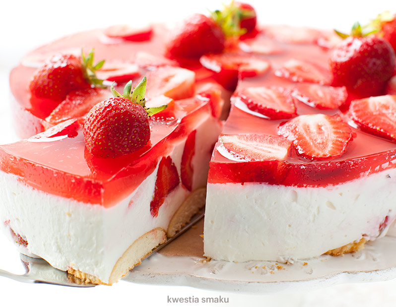

SERNIK NA ZIMNO Z TRUSKAWKAMI
Ciasto nie wymaga pieczenia. Jest pyszne zarówno w ciepłe jak i zimne dni. Najlepsze jest po dwóch dniach, gdy wszystkie składniki się przegryzą. Czasami jednak nie wytrzyma tyle bo jest już zjedzone.:))
Bruce Wayne powiedział Ze wszystkich ciast to najbardziej lubię schabowego
SKŁADNIKI
- 1 kg twarogu sernikowego (zmielonego, z wiaderka)
- 1 mała paczka (ok. 100 g) biszkoptów
- 600 g truskawek
- 1 galaretka truskawkowa
- 2 łyżki żelatyny (spożywczej, nie może być żelatyna fix)
- 1/2 szklanki mleka
- 150 g śmietanki 30% lub 36%
- 1 op. cukru wanilinowego
- 3/4 szklanki cukru pudru lub ksylitolu

PRZYGOTOWANIE
- Przygotować galaretkę zgodnie z instrukcją na opakowaniu odejmując 50 ml wody. Po przygotowaniu przelać galaretkę do czystej miski w celu szybszego ostudzenia i odstawić.
- Truskawki opłukać i dokładnie osuszyć, oderwać szypułki.
- Na dno tortownicy o średnicy 26 cm położyć papier do pieczenia, zapiąć obręcz wypuszczając papier na zewnątrz. Na spodzie poukładać biszkopty.
- Mleko zagotować, odstawić z ognia, wsypać żelatynę i mieszając rozpuścić.
- Do większej miski włożyć twaróg sernikowy, dodać śmietankę, cukier puder lub ksylitol, cukier wanilinowy i wymieszać łyżką.
- Do jeszcze ciepłej i płynnej żelatyny dodać 1 - 2 łyżki masy serowej i wymieszać rózgą. Dodać kolejne 2 - 3 łyżki masy serowej i znów wymieszać rózgą. Powtórzyć jeszcze z kilkoma łyżkami masy serowej, następnie przełożyć całość do pozostałego sera w misce i wymieszać rózgą na jednolitą masę.
- Dodać 2/3 ilości pokrojonych na połówki truskawek, delikatnie wymieszać łyżką i wyłożyć na spód z biszkoptów, wyrównać powierzchnię i wstawić do lodówki na ok. pół godziny. W tym czasie galaretka wystudzi się a sernik lekko stężeje.
- Wyjąć sernik z lodówki i powciskać w niego resztę truskawek pokrojonych na połówki. Łyżką wylewać galaretkę i wstawić do lodówki do całkowitego stężenia.
KOSZTY
| Składnik |
Cena |
| ser 293g |
5,5 zł |
| mleko 1,5l |
1,85 zł |
| truskawki 0,5kg |
10 zł |
INFORMACJE O ALERGENACH
Brak składników alergennych.
- Sernik
- Pyszne serniki na zimno z dodatkiem owoców na serze twarogowym lub na jogurcie.
Newsletter
Adres strony
Joanna Kowalska
Na wielkiej skarpie 5,50-720 Wrocław